Latest News
Floods ravage Odisha, kill eight
08/07/2020
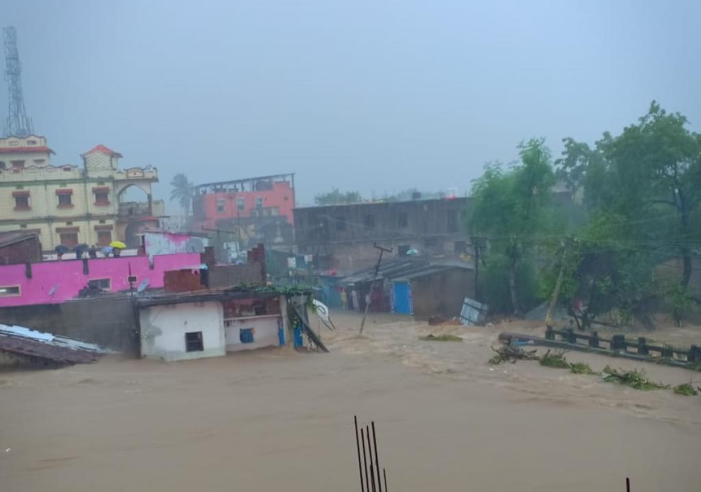Incessant and heavy rainfall has caused floods in several districts of Odisha and killed eight people till now. Also, two people, who were washed away in the floods, are missing, said Special Relief Commissioner Bisnupada Sethi on August 13, 2019.
Know more >>Deluge despite deficit
06/07/2020
Most recently, eastern states of Assam and Bihar have been hit by fresh floods and army has been called for help. In Assam, 21 of the 22 districts have been affected. Some 80 per cent of the Kaziranga National Park, home to India’s one-horned rhinos, has been flooded. Four districts in Bihar have been flooded as Tapti and Mahanadi rivers swell.
Know more>>Severe storm sweeps south-east US, killing at least seven
05/07/2020
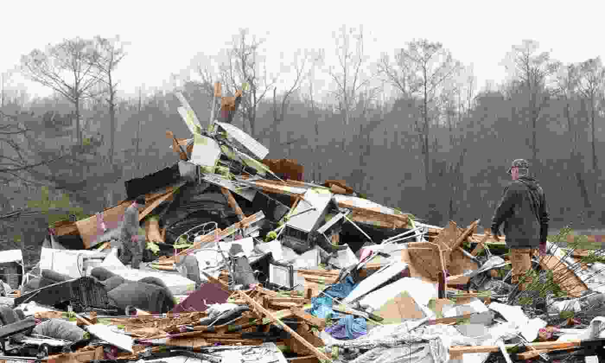The National Weather Service (NWS) reported three storm-related deaths in Alabama on Saturday, bringing to seven the number of people confirmed killed following severe storms across the US Gulf coast and south-east. The NWS in Birmingham said the deaths in Alabama occurred in Pickens county, where an “embedded tornado within a long line of intense thunderstorms” hit.
Know more>>India monsoons: 26 killed as floods cause landslides and house collapses
04/07/2020
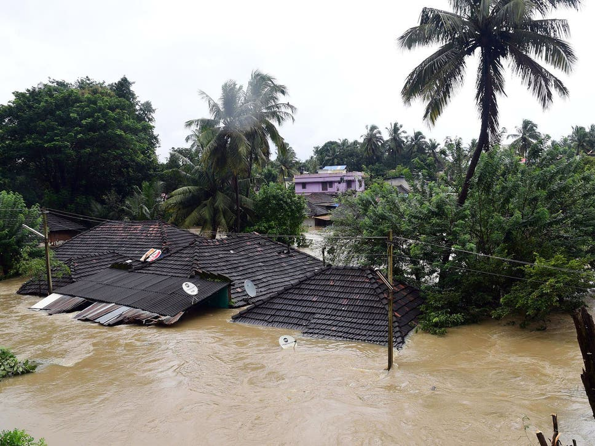Torrential monsoon rains have killed at least 26 people in flooding, landslides and house collapses in the southern Indian state of Kerala, with more than 15,500 people taking shelter in state run relief camps.
Know more>>Avocado supply could be devastated in days if Trump closes Mexico border, experts warn
02/07/2020
While President Donald Trump sees shutting the border with Mexico as punishment for its failure to stop the flow of immigrants coming to the country illegally, economists warn that it would effectively paralyse the US economy given the huge volume of blue jeans, cars, flat-screen TVs, avocados and other goods that cross the border every day.
Know more>>Hurricane Harvey flooding causes Earth's crust under Texas to sink
30/06/2020
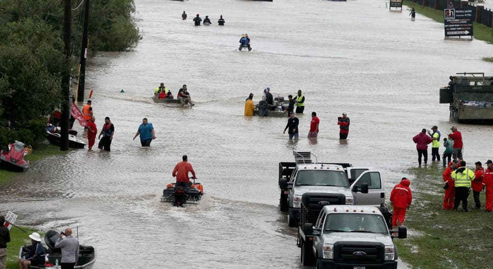The volume of water dispensed on US soil by Hurricane Harvey was so vast it caused the Earth’s crust to give way and sink under the weight. Around 33 trillion gallons of water was left behind by the hurricane — four times the amount left by Hurricane Katrina in 2005. The flooding added around 275 trillion pounds of weight to the landmass of the southern US region, according to calculations by The Atlantic.
Know more>>Hurricane Harvey: Senior citizens airlifted from flooded nursing home after picture goes viral
25/06/2020
Torrential monsoon rains have killed at least 26 people in flooding, landslides and house collapses in the southern Indian state of Kerala, with more than 15,500 people taking shelter in state run relief camps.
Know more>>Senior citizens airlifted from flooded nursing home after picture goes viral
22/06/2020
Senior citizens at a flooded nursing home in Texas were airlifted to safety after their plea for rescue in the wake of Hurricane Harvey went viral on social media. A photo showing residents of the La Vita Bella nursing home in Dickinson, a city around 33 miles southeast of Houston, trapped waist-deep in water was posted to Twitter with a plea for emergency assistance.
Know more>>Houston police officer ‘passes out from exhaustion’ after working non-stop to help victims
21/06/2020
A picture showing a Houston police office passed out from exhaustion after working around the clock to help victims of Hurricane Harvey has emerged as devastating floods swamped the city. The image, which was initially shared on Reddit, shows an officer lying against a cabinet, with his head down.
Know more>>India earthquake: Manipur tremor measuring 6.7 kills eight and injures 100
20/06/2020
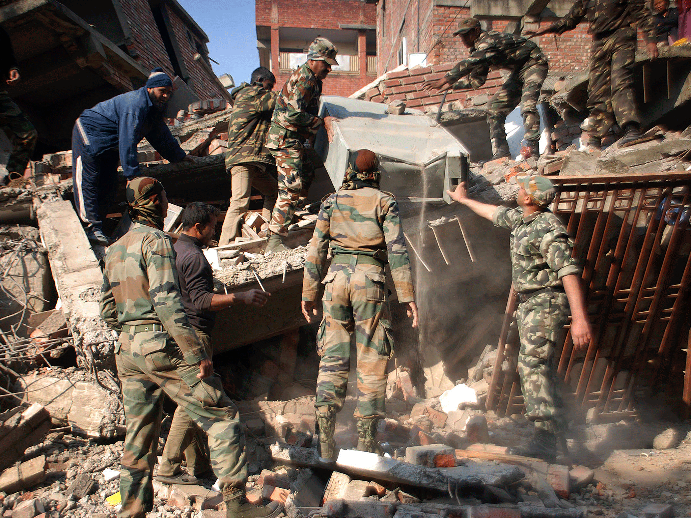Torrential monsoon rains have killed at least 26 people in flooding, landslides and house collapses in the southern Indian state of Kerala, with more than 15,500 people taking shelter in state run relief camps.
Know more>>Tanzania earthquake: 5.7 magnitude quake kills 13 and injures more than 200
14/06/2020
A major earthquake has struck the border area between Tanzania and Uganda, causing widespread damage and killing at least 13 people. Local authorities in northwestern Tanzania say more than 200 people have been injured and there is "a lot of damage" to the worst-hit city of Bukoba, which has a population of 70,000.
Know more>>New Zealand recovery team returns to volcanic island for bodies
12/06/2020
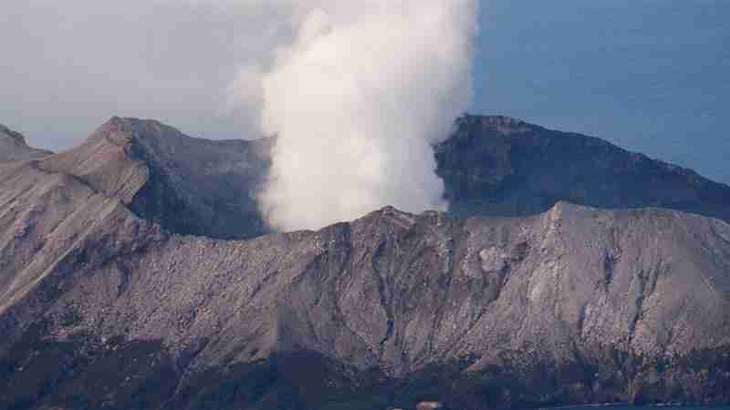New Zealand recovery teams have returned to the volcanic White Island but were unable to locate two remaining bodies in their search as the death toll from the eruption rose to 16. Authorities said eight police search-and-rescue staff were deployed for 75 minutes on Sunday to an area in which their information suggested one body may remain.
Know more>>Death toll from Kenya landslides surges to 60
01/06/2020
The death toll from landslides in northwestern Kenya triggered by unusually heavy rains rose to at least 60 on Sunday, according to Kenyan authorities. Downpours began on Friday in West Pokot county which borders Uganda and worsened overnight causing flooding and mudslides that swept away four bridges and left villages inaccessible by road.
Know more>>200,000 evacuated as Typhoon Kammuri lashes Philippines
21/05/2020
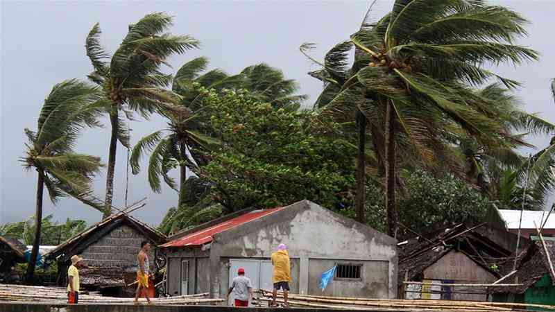The Philippines evacuated 200,000 people in coastal and mountainous areas amid fears of flooding and landslides, and closed the country's main international airport, as a powerful typhoon hit the Southeast Asian nation. Typhoon Kammuri, the Philippines 20th typhoon this year, hit the main Luzon island just before midnight local time on Tuesday (16:00 GMT on Monday). The strengthening storm is locally referred to as Typhoon Tisoy.
Know more>>Rocks at Asteroid Impact Site Record First Day of Dinosaur Extinction
16/05/2020
The research centers on the asteroid impact that wiped out non-avian dinosaurs, with the researchers getting the most detailed look yet of the aftermath that followed by examining the rocks and debris that filled the crater within the first 24 hours after impact.
Know more>>Scientists use ancient marine fossils to unravel long-standing climate puzzle
15/05/2020
Cardiff University scientists have shed new light on the Earth's climate behaviour during the last known period of global warming over 14 million years ago. During this period, known as the middle Miocene Climate Optimum, global temperatures were as much as 3 to 4 degrees warmer than today's average temperatures, similar to estimates for 2100. The position of the continents were similar to today and the seas were flourishing with life.
Know more>>Helping land managers take risk-analysis approach to new wildfire reality
14/05/2020
New digital tools developed by Oregon State University will enable land managers to better adapt to the new reality of large wildfires through analytics that guide planning and suppression across jurisdictional boundaries that fires typically don't adhere to. Now, Dunn notes, "we suppress 97 or 98% of fires such that we experience the 2 or 3% that are really bad, where we have no chance of successful suppression because they're just so explosive."
Know more>>West Bengal well prepared to handle natural disaster: Mamata Banerjee
26/04/2020
West Bengal is well prepared to tackle natural disasters and has already built flood shelters and relief godowns in the districts, Chief Minister Mamata Banerjee said Saturday. The state government has also devised an SMS-based early warning system to alert people during any natural calamity, she said in a Twitter post.
Know more>>Cyclone Titli: 8 dead in Andhra Pradesh, one in Odisha
21/04/2020
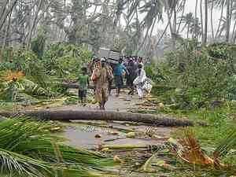A very severe cyclonic storm packing winds of up to 150 kmph and widespread rains hit eastern India Thursday, killing eight people in Andhra Pradesh and one in Odisha, damaging homes, uprooting trees and power lines in the two states. Cyclone 'Titli' made landfall on the eastern coast early Thursday, wreaking havoc mainly in Srikakulam and Vizianagaram districts of Andhra Pradesh and Odisha'
Know more>>GST Council sets up GoM to review help for states hit by natural calamity
03/04/2020
The Goods and Services Tax Council has formed a seven-member group of ministers with Bihar deputy chief minister Sushil Kumar as convenor to examine how states hit by a natural calamity can be assisted under the tax regime with steps such as a separate cess. “We will have a seven-member group of ministers, which in the next few weeks will make a recommendation,” Union finance minister Arun Jaitley, chairman of the council, told reporters after its 30th meeting held via video conferencin ..
Know more>>India monsoons: 26 killed as floods cause landslides and house collapses
04/02/2020
Torrential monsoon rains have killed at least 26 people in flooding, landslides and house collapses in the southern Indian state of Kerala, with more than 15,500 people taking shelter in state run relief camps.
Know more>>No aid policy: How India changed from taker to donor
01/01/2020
India over last one and a half decade has emerged a donor whenever natural disasters strike anywhere in the world, from impoverished Haiti to developed Japan. In 2013 India made it clear to both the US and Japan, which offered $200,000 towards Uttarakhand relief, that it will not accept the aid and that any funding must be given to foundations.
Know more>>After pledging Rs 7 cr for Kerala relief ops, Google bets on AI to tackle diseases
27/12/2019
Tech giant Google today said it is working with multiple partners to use new-age technologies like artificial intelligence (AI) and machine learning (ML) to improve response time to natural disasters like floods as well as addressing healthcare challenges. Google Technical Project Manager (TensorFlow) Anitha Vijayakumar said the company has developed a system that uses AI for early and accurate flood warnings, including guiding over areas that are dangerous and prone to flooding
Know more>>Relatives commemorate the victims of the 2004 Indian Ocean tsunami
26/12/2019
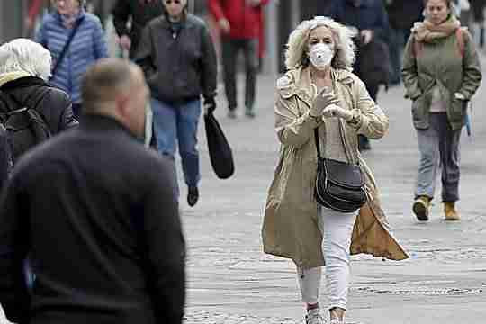Thousands converged in cemeteries in the Indonesian province of Aceh on Thursday to commemorate 15 years since a devastating tsunami.About 230,000 people lost their lives when a 9.1-magnitude undersea earthquake struck on the morning of December 26, 2004. It happened near the Indonesian island of Sumatra and triggered a massive tsunami.
Know more>>A week on, New Zealand observes minute of silence for volcano victims
16/12/2019

New Zealanders across the country observed a minute of silence on Monday to honour the victims of last week's fatal volcanic eruption, as police continued efforts to recover two bodies. The official death toll from the surprise eruption on White Island, also known by its Maori name of Whakaari, stands at 16. Two people whose bodies are believed to be in the waters around the island are still officially listed as missing. A further 26 people remain in hospitals in New Zealand and Australia, many in critical condition with severe burn injuries.
Know more>>New Zealand volcano: 'No signs of life' on White island, says PM Jacinta Arden
10/12/2019
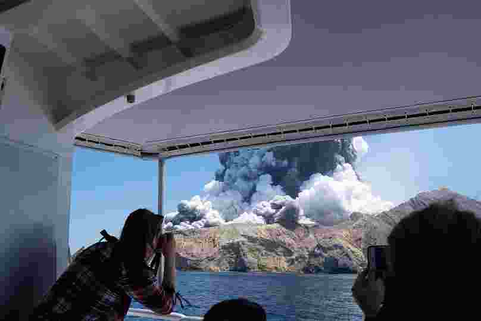New Zealand's Prime Minister Jacinta Arden said on Tuesday that reconnaissance flights showed 'no signs of life' on White Island volcano. Police confirmed that they were starting a criminal investigation after the disaster The volcano erupted on Monday leaving five dead, eight missing and injuring 31 tourists. Authorities do not expect to find any more survivors. Ardern said that five new Zealanders as well as 23 visitors from Australia, nine from the US, two from the UK, four from Germany, two from China and one person from Malaysia were among those affected..
Know more>>Flood-hit Mozambique in 'urgent need' of large-scale international aid - United Nations
26/09/2019
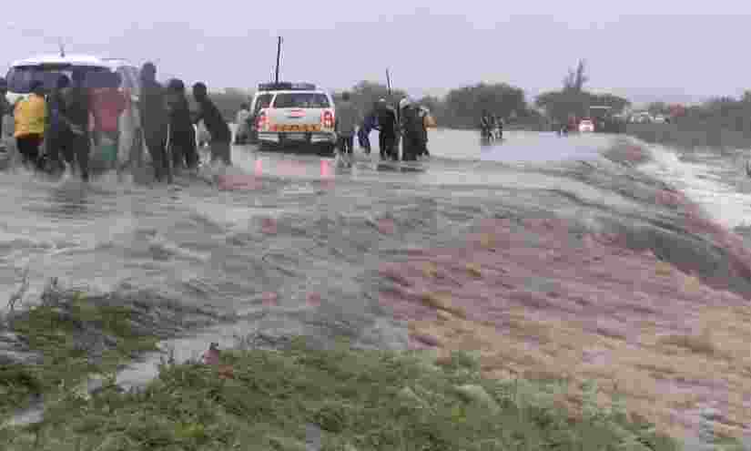Almost a week after Cyclone Kenneth struck Mozambique, aid workers say many remote areas are still waiting for emergency supplies.Kenneth caused storm surges and winds of up to 280 kilometres an hour. The flooding situation has been worsened by the cyclone arriving at the end of the rainy season, when river levels were already above their normal levels. Gemma Connell, Head of Office for the United Nations Office for the Coordination of Humanitarian Affairs for southern and eastern Africa told Euronews: "Assessment teams have been out over the last few days, ready to go and assist people if water levels do rise further over the next 48 hours.
Know more>>India monsoons: 26 killed as floods cause landslides and house collapses
10/08/2019
Torrential monsoon rains have killed at least 26 people in flooding, landslides and house collapses in the southern Indian state of Kerala, with more than 15,500 people taking shelter in state run relief camps.
Know more>>